DT砲 Double Triple Cannon
概要
DT砲はTSD→TSTと狙う技です．地形は高くなってしまいがちなので置きミスには気を付けたいところです．
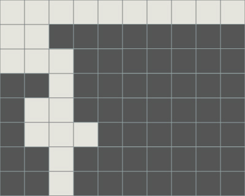 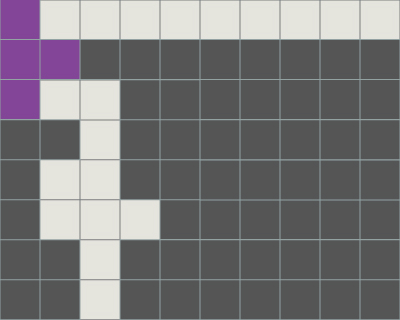 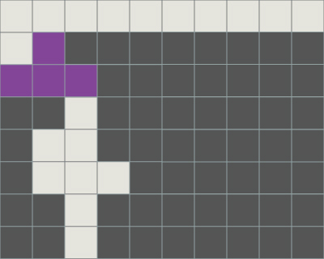 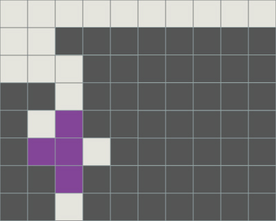 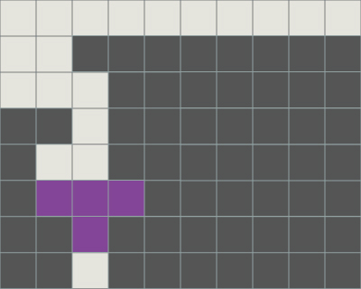
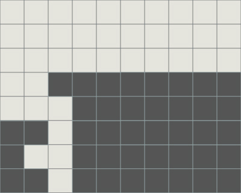 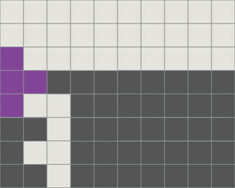 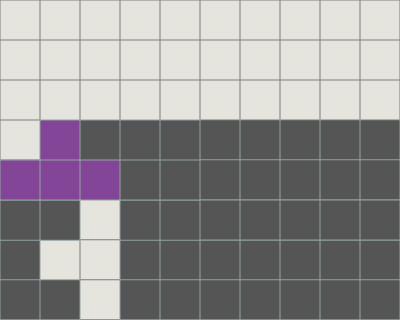 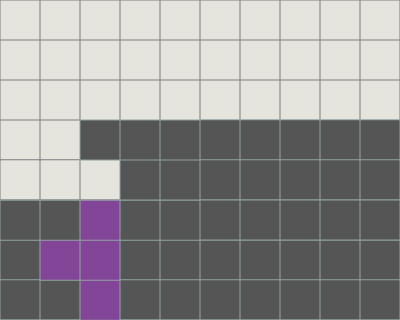 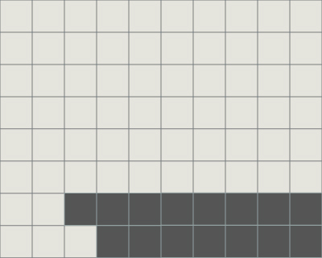
補足
DT砲をT-Spinを打つ分ごとに色分けを行うと，最後まで積みきらなくとも打ち始められることがわかります．
まとめ打ちが理想ですが，ミノの置き場所に困りやすいDT砲では覚えておくとよいでしょう．
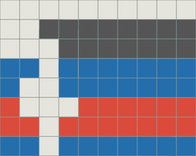 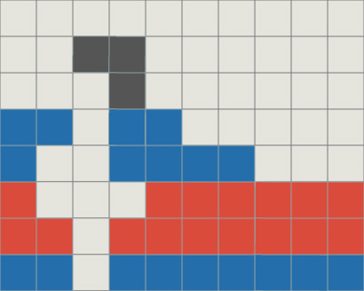
補足
DT砲の最下穴横に穴が増えると3連TSDになります．
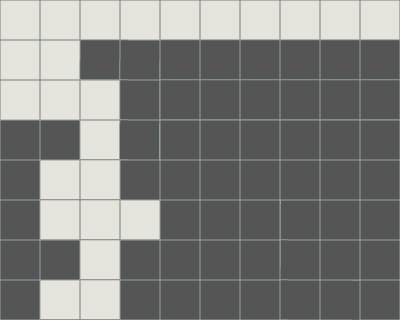 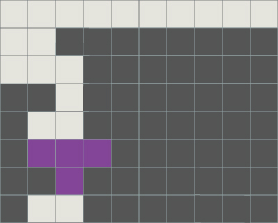 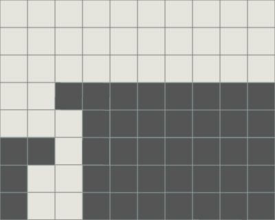
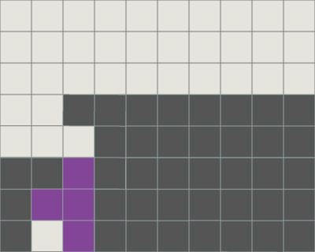 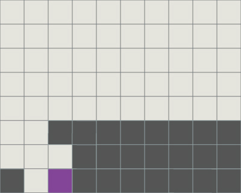 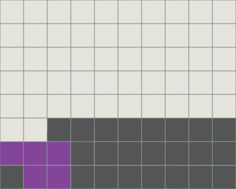
途中
DT砲は高さ2以上の直列穴の周辺2マスが空いている場合に可能です．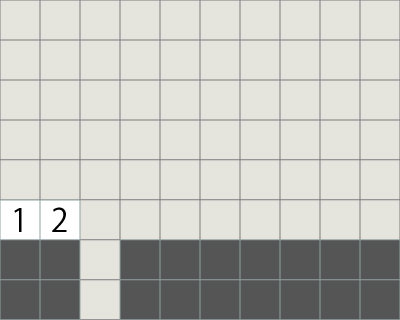 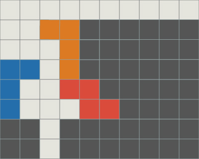
TSDを打てる地形でも，条件を満たせばDT砲を狙うことができます．
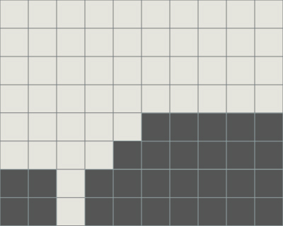 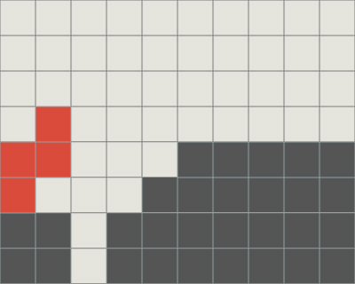 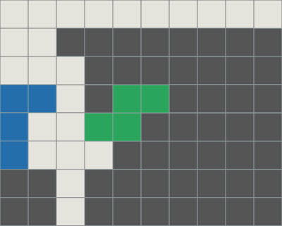
開幕
高火力を放つことのできるDT砲は開幕としてもよく使われています．2種類のアプローチがあり，LJを立てるか寝かせるかです．
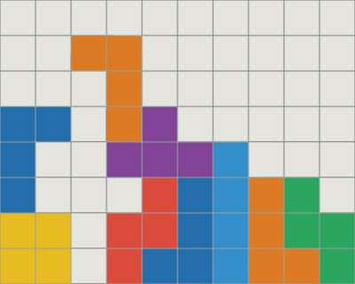 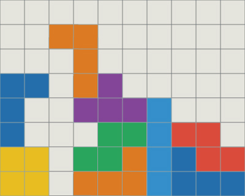
また，屋根部分のLミノは，SZミノを組み合わせても同様に可能です．
その際に，他の部分をL,O,Iミノで埋めると，打切り後，3マス床につき相手の攻撃を受ける準備ができます．（図の灰色部分）
コンボにはつなげづらいので注意が必要です．（後述）
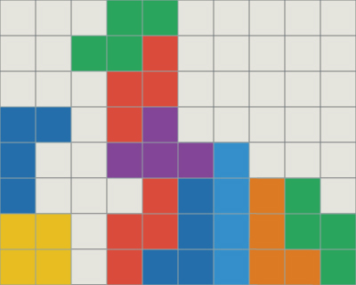 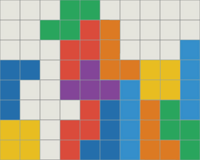 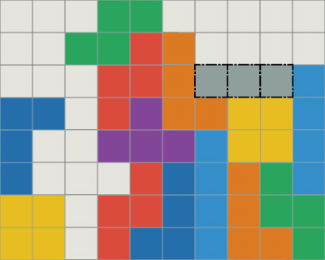
打後
DT砲打切り後は多様に発展できます．4列空けコンボへ繋げたいときは，屋根の部分の上にミノを置いてはいけません．
その点では，SZミノでの屋根は使いづらいです．
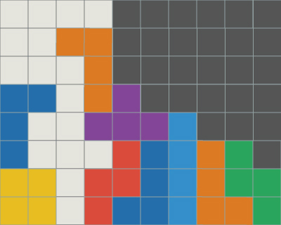 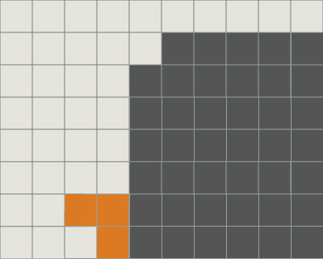
開幕DT砲からパーフェクトクリアをする方法はいくつかあります．例をあげてみます．
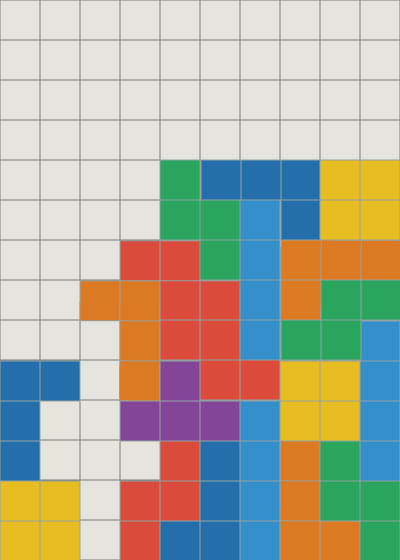 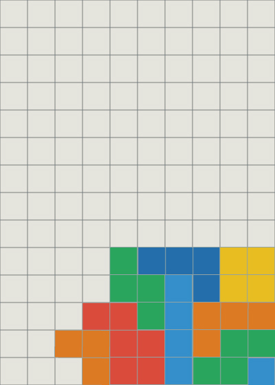
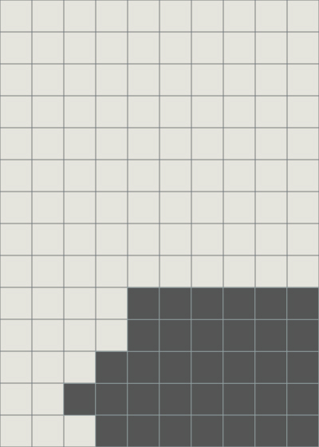 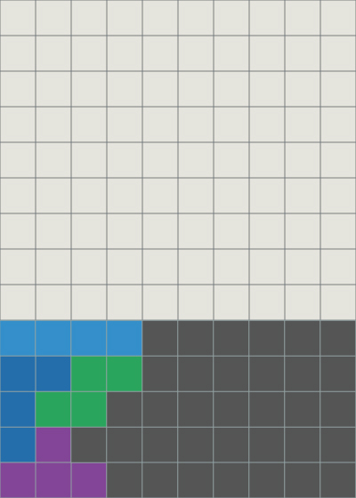 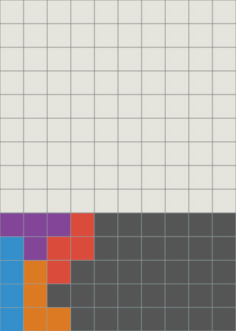
TKIへつなげることも可能です．これはその一例です．
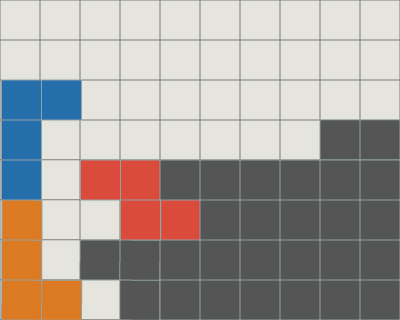
また，最後にTSTを打つので残る地形は良くはありません．
T-SpinやSZの回転入れなどでライン消去をしてもいいですが，LJミノが近い場合はBackToBackを維持したままテトリスを狙うのもよいでしょう．
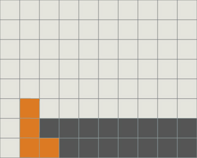 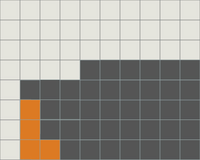

穴を無視してテトリスを狙うこともできます．（アンカーセットの技法）
その際は穴の上部（図の灰色部分）にミノを置かないことを意識するとさらにさまざまな発展が見込めます．
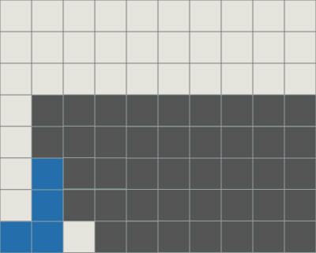 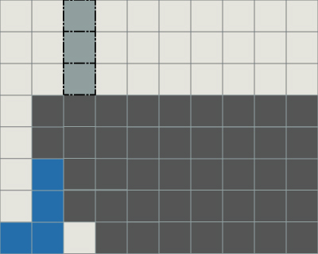 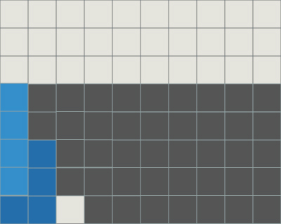